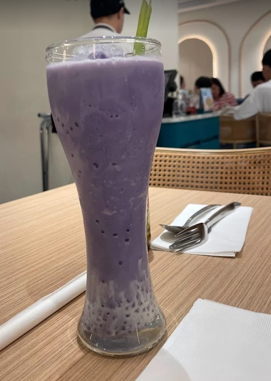
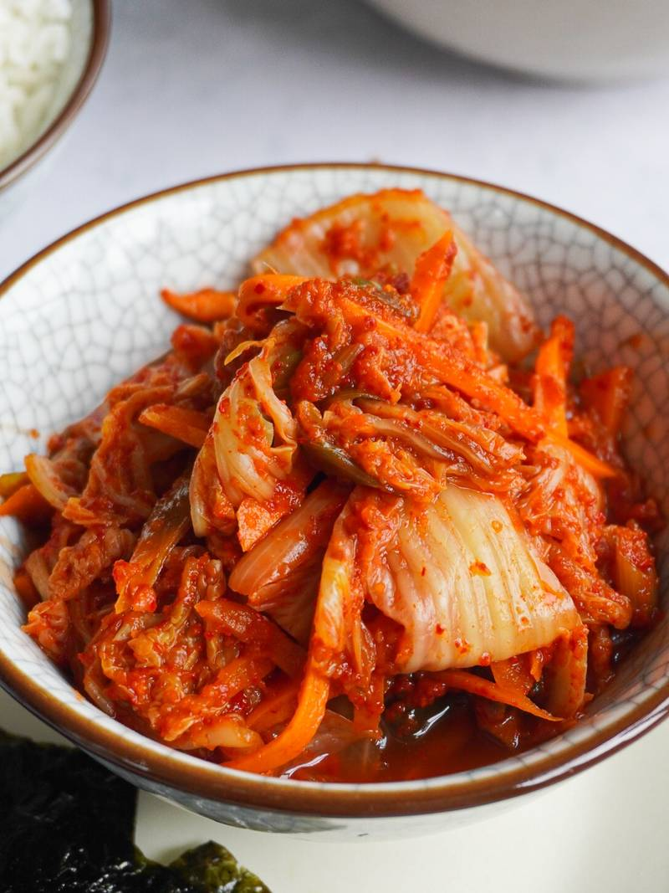
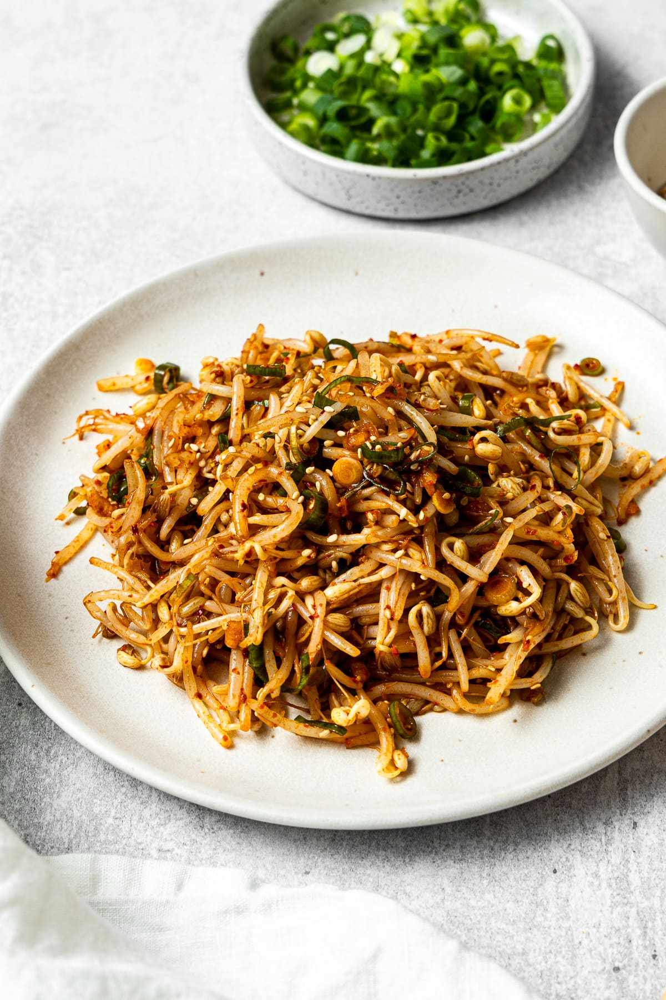
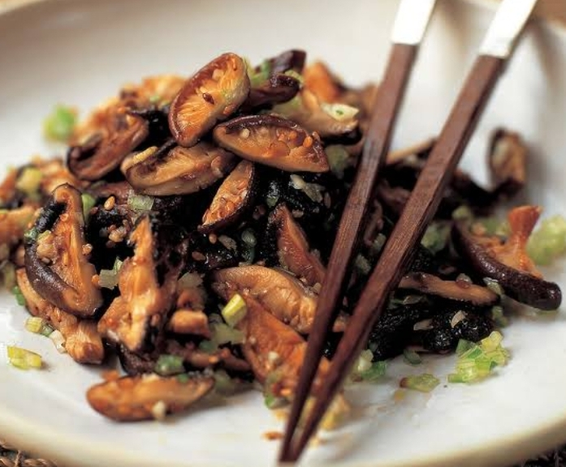
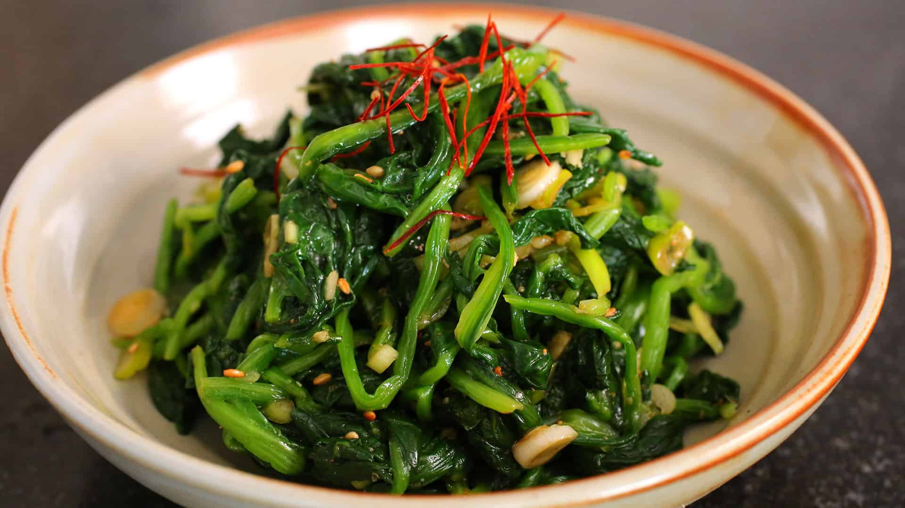
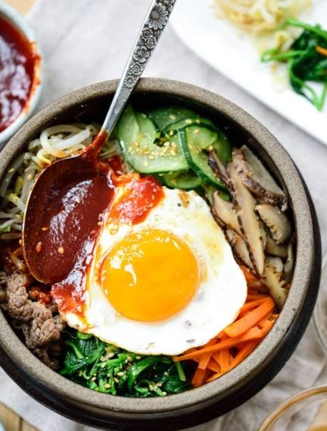
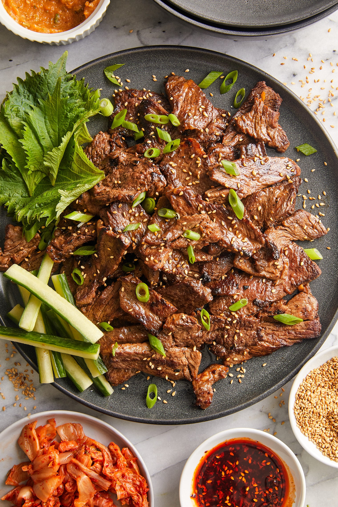
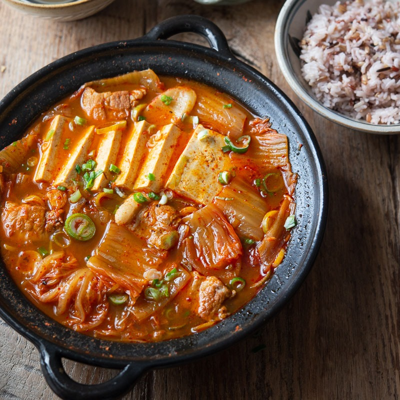
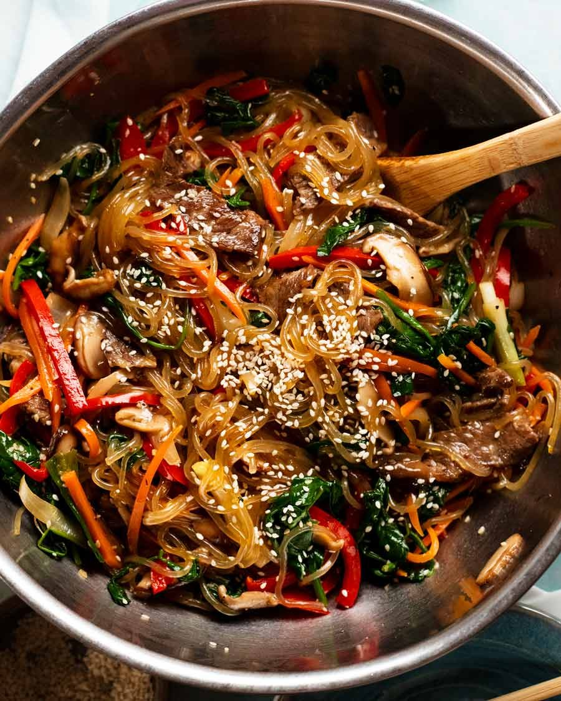

Our Menu
Appetizer
-
Kimchi
PHP 100Napa cabbage, radish, gochugaru(Korean chili powder), garlic, ginger,

jeotgal(fermented seafood, optional), salt, sugar, gochujang(Korean chili paste, optional). -
Kongnamul Muchim-(Soybean Sprout Salad)
PHP 150Soybean sprouts, sesame oil, soy sauce, garlic, gochugaru(optional),

salt, pepper. -
Kkakdugi-(Radish Kimchi)
PHP 95Radish, gochugaru, garlic, ginger, salt, sugar, jeotgal(optional).
 -
Siitake Mushroom Namul
PHP 100Siitake mushrooms, soy sauce, sesame oil, garlic, salt, pepper.
 -
Spinach Namul
PHP 115Spinach, sesame oil, garlic, soy sauce, salt, toasted sesame seeds.
 -
Main Course
-
Bibimpad
PHP 100Steamed rice, assorted seasoned vegetables(namul),

gochujang(Korean chili paste),a fried egg, often with meat(beef, pork). -
Bulbogi
PHP 110Thinly sliced marinated beef(often ribeye or sirloin),

soy sauce, sesame oil, garlic, ginger, sugar, onions,
pear (for tenderness). -
Kimchi Jjigae-(Kimchi Stew)
PHP 100Kimchi, pork(or tofu), onions, garlic, gochujang(optional),
 -
Doenjang Jjigae-(Soybean Paste Stew)
PHP 85Doenjang (Fermented soybean paste), Tofu, various
vegetables(zucchini, mushrooms, onions), grean onions..jpg)
-
Japchae-(Glass Noodles)
PHP 75Sweet potato starch noodles(dangmyeon), assorted

vegetables(carrots, spinach, mushrooms, onions),
soy sauce, sesame oil, sugar.
-
Bibimpad